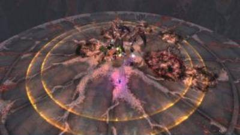
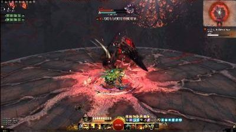
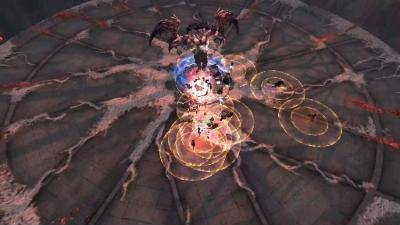

Jeder Stack +5 % Schaden, permanent. Ab 10 % schlägt Cerus alle 4 s mit Enraged Smash (unvermeidbar, +2 Stacks) – je mehr Stacks vorher, desto kürzer überlebt ihr. Quellen: Malice erreicht Cerus (+5) · Spieler im Rage-AoE (+1 je Spieler) · Gluttony-Orb verpasst (+1–3) · Regret verpatzt (+5).
2
Petrify: Bar in 7,7 s brechen
Bei 80 / 50 / 10 %. Nicht gebrochen = Wipe. Innerhalb von ~1,4 s gebrochen = gar kein Debuff. Heiler nehmen schwere CC mit.
3
Split: genau 1 Embodiment töten
Im CM endet der Split mit dem 1. Kill; Lebende geben ihren Buff an Cerus. Üblich: 80 % Regret, 50 % Gluttony töten. Nie ein kleines töten – das empowert es!
4
Envy & Rage (empowered)
Envy: 2. Wand gegenüber, doppelt so schnell → springen; Corrupt = Boons vom Boss strippen. Rage: AoE viel größer → per Portal raus (Sand Swell, Portal Entre).
5
Despair & Malice (empowered)
Despair: Kreise und Pools doppelt so groß, Pools ignorieren Invuln/Evade → weit weg in Formation ablegen. Malice: 3 Adds → per Portal weit weg spawnen, nach Resistance immobilisieren.
6
Gluttony & Regret (normal) – und nicht runterfallen
Gluttony: 3 große Orbs, jeder muss von 3 Spielern geblockt werden (Insatiable-DoT pro Orb); je ein markierter Spieler führt seine Subgruppe auf eine Seite. Regret: mindestens 5 Spieler ins Green, sonst alle down + 5 Stacks. Wer im CM von der Plattform fällt, ist sofort tot.
② Petrify-Tether: Bar brechen

④ Rage empowered: raus per Portal⑤ Despair: Kreise verteilen
Details zum Nachschlagen
Hardstuck hat für Temple of Febe nur einen Normal-Mode-Guide. Texte nach dem CM-Guide von Silverhalf; die Bilder sind Hardstuck-NM-Standbilder (empowered Varianten).
Ablauf & Splits

Petrify bei jedem Phasenwechsel
Vier Hauptphasen, zwei Splits. Im Hauptkampf erscheinen Embodiments unverwundbar, führen ihre Mechanik aus und verschwinden.
Split: alle 6 Embodiments spawnen, 3 sind empowered (größer). Alle 12 s greift eines an, das 1. ist fast immer Gluttony.
Petrify: alle 0,7 s ein Stack (–10 % Schaden/Tempo), bei 10 Stacks 8 s Stun. Bar braucht nur 3600 Schaden.
Übergang zu 10 %: laufende Malice-Tether spawnen noch Adds, Despair-Pools vom Embodiment bleiben die ganze Endphase.
Aspekte im Detail

Despair: Spreads hinterlassen PoolsRage: unvermeidbar, nur Distanz hilft
Kurz vor dem Füllen dodgen vermeidet Treffer und Pool. Empowered: Invuln gegen den Drop, dann vor dem 1. Tick (~1 s) raus.
Envy zielt vom Boss aus auf einen zufälligen Spieler → vorher eng stacken, links vorbei und mitlaufen. Jump-Dodge über die schnelle Wand.
Gluttony: Orbs, die Cerus erreichen, geben ihm Barrier (groß 500k). Durchdodgen zählt nicht als Blocken.
Rage gibt Exposed + 1 Stack je getroffenem Spieler. Portal außerhalb vorbereiten, auf der Gruppe oder im Boss-Hitbox öffnen.
Malice: Adds haben 30 s Resistance, sind CC-immun und laufen zu Cerus. Am Ostrand spawnen lassen – mehr Zeit zum Töten.
Regret empowered (3 Greens, je 3 Spieler, nicht überlappen) gibt es nur im Titel-Run „Embodiment of Sin“.
Legendary CM (optional)
Mehr HP (117 statt 95,6 Mio.), Insatiable permanent bei empowered Gluttony, Malices mit mehr HP und Toughness.
Regret-Fail tötet den Squad, 2 Stacks Extreme Vulnerability = tot, Enraged Smash gibt 3 statt 2 Stacks.
Faustregel: mit mehr als 10 Stacks in die letzten 10 % ist LCM kaum zu schaffen.
Klassen & Rollen
Daten: GW2 Wingman, Challenge Mode, „Balance Patch November 2026“, Stand 24.11.2026 · Cerus: Erfolgsquote 8,2 %, Median-Kill 4:35 min · Ø-DPS nur Specs mit ≥ 0,5 % Anteil · Erfolgsquote zählt alle hochgeladenen Versuche
Am häufigsten gespielt (CM)
Spec
Anteil
Virtuoso
22,2 %
Scourge
16,6 %
Chronomancer
11,0 %
Harbinger
9,7 %
Mechanist
5,7 %
Antiquary
5,7 %
Ritualist
4,4 %
Tempest
3,8 %
Firebrand
3,5 %
Herald
2,4 %
Höchster Ø-DPS (CM)
Spec
Ø DPS
Top
Harbinger
31.849
35.295
Antiquary
31.834
36.380
Virtuoso
30.854
36.078
Berserker
30.512
36.116
Vindicator
30.244
31.122
Weaver
29.411
32.540
Paragon
29.223
31.369
Mechanist
28.670
33.658
Evoker
28.483
36.338
Tempest
28.134
29.728
Rollen-Empfehlung (abgeleitet aus Beliebtheit + Ø-DPS)
Rolle
Specs
Warum
DPS sicher & beliebt
Virtuoso, Harbinger, Mechanist, Antiquary
Am häufigsten in den CM-Logs – bewährt für diese Mechaniken.
Große Spanne zwischen Ø und Top-DPS → als Support und als (Boon-)DPS gespielt.
Heal-Support
Chronomancer
Ø-DPS unter 3,5k → in CM-Logs praktisch nur als Heiler/Support.
Komp-Tipp: Laut Wingman führen Virtuoso und Scourge – beide bringen Portale gegen Rage und Malice (Portal Entre, Sand Swell), Scourge zusätzlich Immobilize für Malices. Chronomancer und Harbinger folgen. Achtung: nur 8,2 % der CM-Logs sind Kills.
Klassentipps – worauf du achten musst
Mechanik-Bezug aus dem Guide; die Klassenhinweise sind allgemeine Spieltipps. Für die neuesten Elite-Specs (z. B. Troubadour, Ritualist, Paragon, Luminary, Conduit, Evoker, Antiquary, Galeshot, Amalgam) gelten v. a. die Klassen-Grundregeln – prüfe die konkreten Skills im aktuellen Build.
Wächter
Firebrand · Luminary · Willbender · Dragonhunter
Firebrand: höchster Top-Wert in diesen Logs.
Aegis gegen Despair-Drop und Malice-DoT.
Stabi gegen Envy-Corrupt einplanen.
Ingenieur
Mechanist · Amalgam · Scrapper · Holosmith
Mechanist: Heiler-/DPS-Option, Mech von der Envy-Wand fernhalten.
Amalgam: solider DPS.
Gyros für Rezz in der Endphase.
Mesmer
Virtuoso · Chronomancer · Troubadour · Mirage
Virtuoso: meistgespielt – Portal Entre gegen Rage/Malice.
Chrono: Boons + Feedback gegen kleine Gluttony-Orbs.
Blink sammelt Orbs schnell (Vorsicht vor Kante).
Elementarmagier
Tempest · Weaver · Catalyst · Evoker
Weaver/Evoker: starker Ø-DPS.
Tempest: Heiler-Option.
Wenig HP → Empowered-Stacks treffen hart.
Nekromant
Ritualist · Scourge · Reaper · Harbinger
Scourge: Sand Swell + Dark Pact/Epidemic für Malices.
Summon Flesh Golem: schwere CC für Petrify.
Harbinger: einer der höchsten Ø-DPS.
Widergänger
Renegade · Vindicator · Herald · Conduit
Renegade: Banish Enchantment strippt Envy-Boons vom Boss.